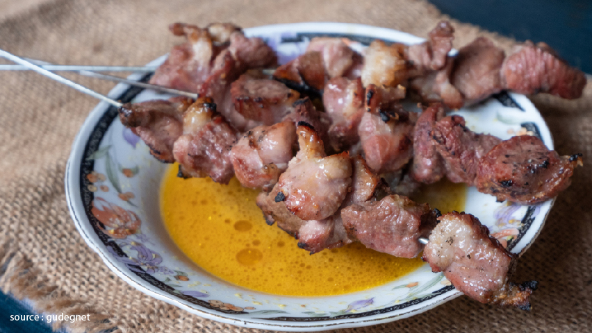
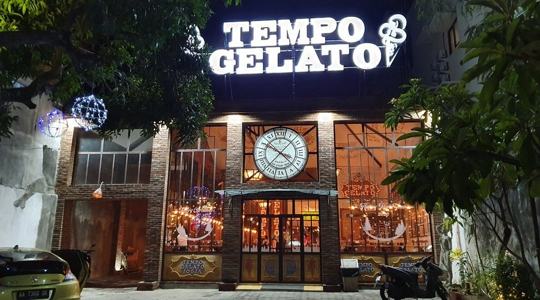

Yogyakarta
KULINER
wisata kuliner khas Yogyakarta.

Gudeg
Hidangan khas berbahan nangka muda yang dimasak lama dengan santan dan gula jawa, menciptakan rasa manis gurih yang jadi ciri khas kota ini.
📍 Rekomendasi:
˗ˏˋ ✸ Gudeg Permata Bu Narti - Jl. Gadjah Mada No.2, Pakualaman
˗ˏˋ ✸ Gudeg Pawon - Jl. Janturan UH/IV No.36, Warungboto, Umbulharjo
*✩‧₊˚Gudeg Permata Bu Narti Location *✩‧₊˚Gudeg Pawon Location
Bakpia Pathok
Kue kecil berisi kacang hijau, cokelat, atau keju ini sudah menjadi simbol oleh-oleh khas Yogyakarta sejak puluhan tahun lalu.
📍 Rekomendasi:
˗ˏˋ ✸ Bakpia Pathok 25 – Jl. AIP II KS Tubun No.75, Pathuk
˗ˏˋ ✸ Bakpia Kukus Tugu Jogja – Jl. Diponegoro No.59, Jetis
*✩‧₊˚⋆Bakpia Pathok 25 Location *✩‧₊˚Bakpia Kukus Tugu Jogja Location

Sate Klathak
Dikenal karena menggunakan tusuk besi, sate ini punya rasa gurih alami tanpa bumbu berlebihan.
📍 Rekomendasi:
˗ˏˋ ✸ Sate Klathak Pak Pong – Jl. Sultan Agung, Pleret, Bantul
˗ˏˋ ✸ Sate Klathak Pak Bari – Pasar Jejeran, Wonokromo, Bantul
*✩‧₊˚Sate Klathak Pak Pong Location *✩‧₊˚Sate Klathak Pak Bari LocationBali
KULINER
wisata kuliner urban di Yogyakarta.

Thyme Beef Bar & Eatery
Thyme Beef Bar & Eatery — Restoran modern bernuansa elegan dengan menu daging premium. Suasana nyaman dan mewah, cocok untuk makan malam atau hangout bergaya urban di kawasan Ambarukmo.
📍 address
˗ˏˋ ✸ Thyme Beef Bar & Eatery — Jl. Laksda Adisucipto KM 6 No. 13, Ambarukmo.
✩‧₊˚Thyme Beef Bar & Eatery Location

Tempo Gelato
Tempat dessert & gelato artisan yang populer di kalangan anak muda dan wisatawan. Ideal untuk pencuci mulut setelah makan malam atau sebagai tempat nongkrong santai.
📍 address
˚ˏˋ ✸ Jl. Prawirotaman No. 38B, Brontokusuman, Mergangsan
✩‧₊˚Tempo Gelato Location